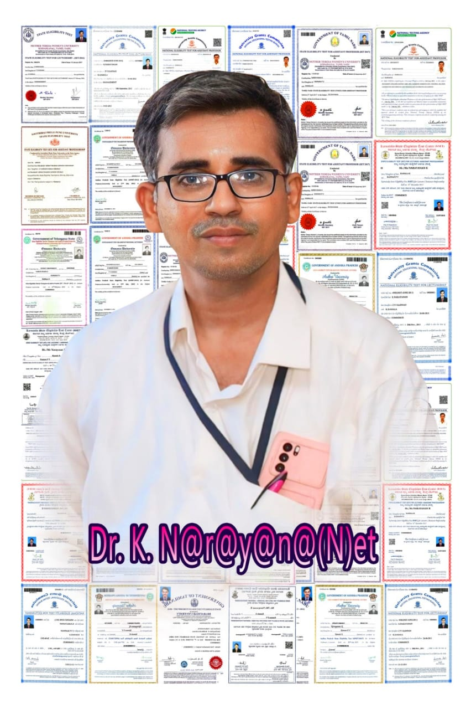

Official Academic Website
Welcome to the official faculty profile website of Dr. K. Narayanan. This website showcases academic qualifications, teaching experience, research contributions, publications, awards, professional activities, and institutional service.
Committed to excellence in teaching, research, academic leadership and student development.

Years of Experience
Dr. K. Narayanan has dedicated his professional career to higher education through innovative teaching, impactful research, curriculum development, and student mentoring.
His academic contributions include research publications, conference presentations, faculty development programmes, and institutional responsibilities that support quality education.
Doctoral degree with specialization in Commerce and Management.
National & International research publications with academic impact.
Student-centered learning supported by modern teaching practices.
Recognized for academic excellence, innovation and service.
Years Experience
Research Publications
Students Mentored
Awards & Honors
To inspire future generations through quality education, innovative research, ethical leadership and lifelong learning.
To create an engaging academic environment that encourages knowledge, creativity, research excellence and social responsibility.
A quick overview of major achievements and academic strengths.
Active researcher with publications in reputed journals and conference proceedings.
Dedicated educator committed to student success through innovative teaching methodologies.
Significant contributions to curriculum development, academic committees and professional activities.
Research interests and academic contributions across teaching, innovation and scholarly publications.
Research focusing on commerce, accounting, finance, business management and entrepreneurship.
Guiding scholars in research design, statistical analysis and publication ethics.
Explore some of the recent academic publications and research contributions.
Published in peer-reviewed international journals with significant academic impact.
View Details →Presented papers at national and international conferences on emerging research topics.
View Details →Teaching undergraduate and postgraduate students while actively engaging in research and academic development.
Publishing research papers, mentoring scholars and participating in faculty development programmes.
Serving on academic committees, curriculum planning and student mentoring initiatives.
Learn more about academic qualifications, teaching experience, research publications, awards and professional achievements.
Explore Now